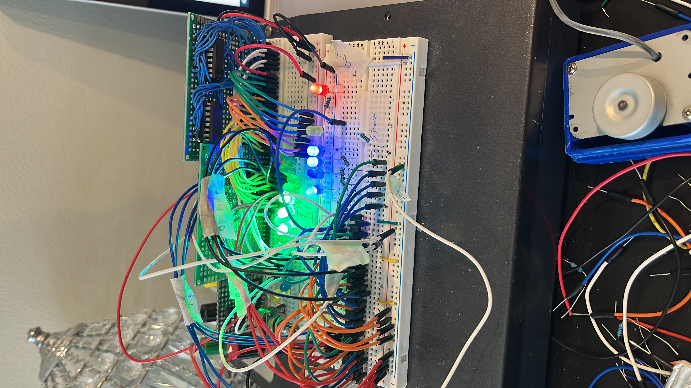
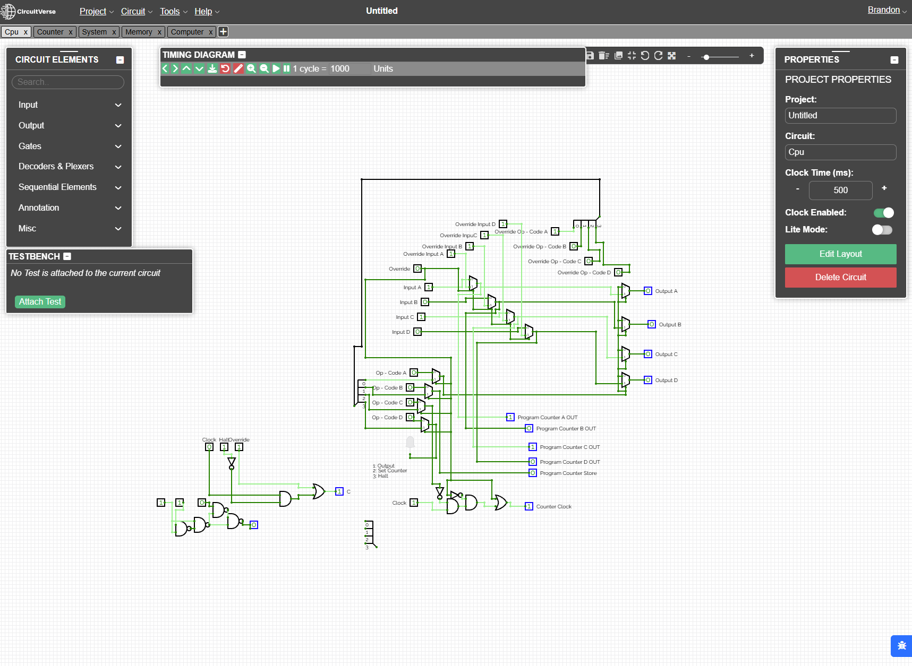
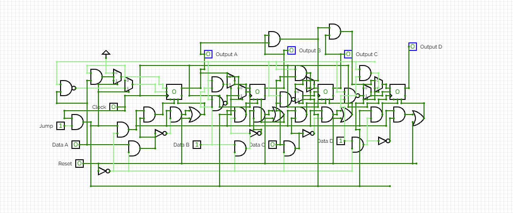
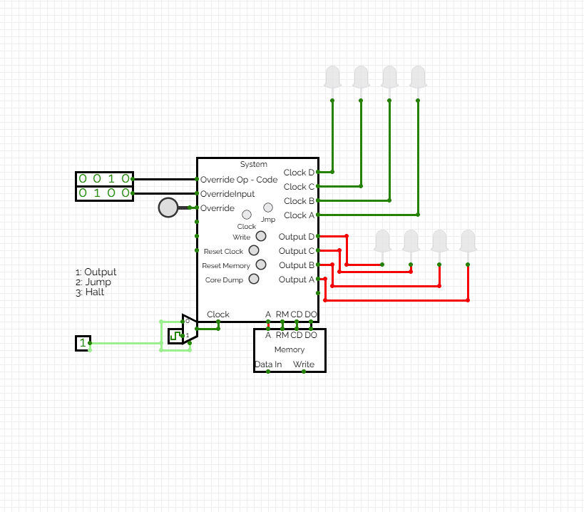
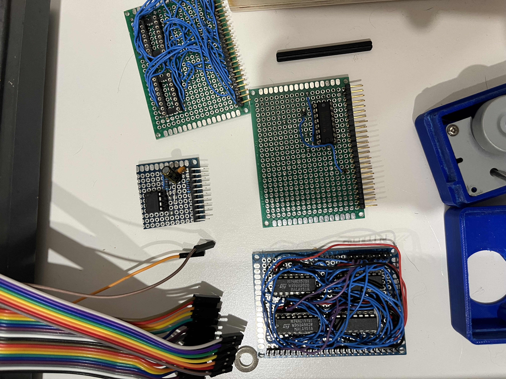
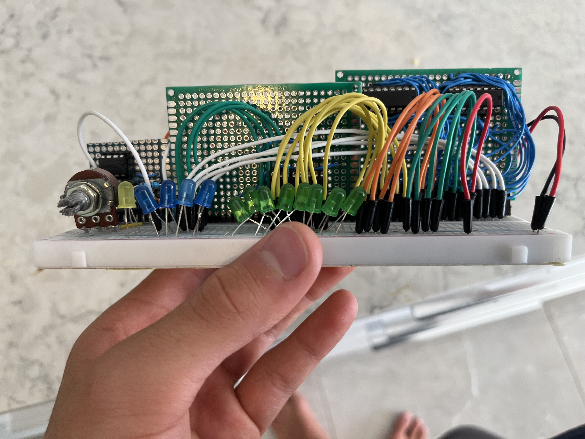
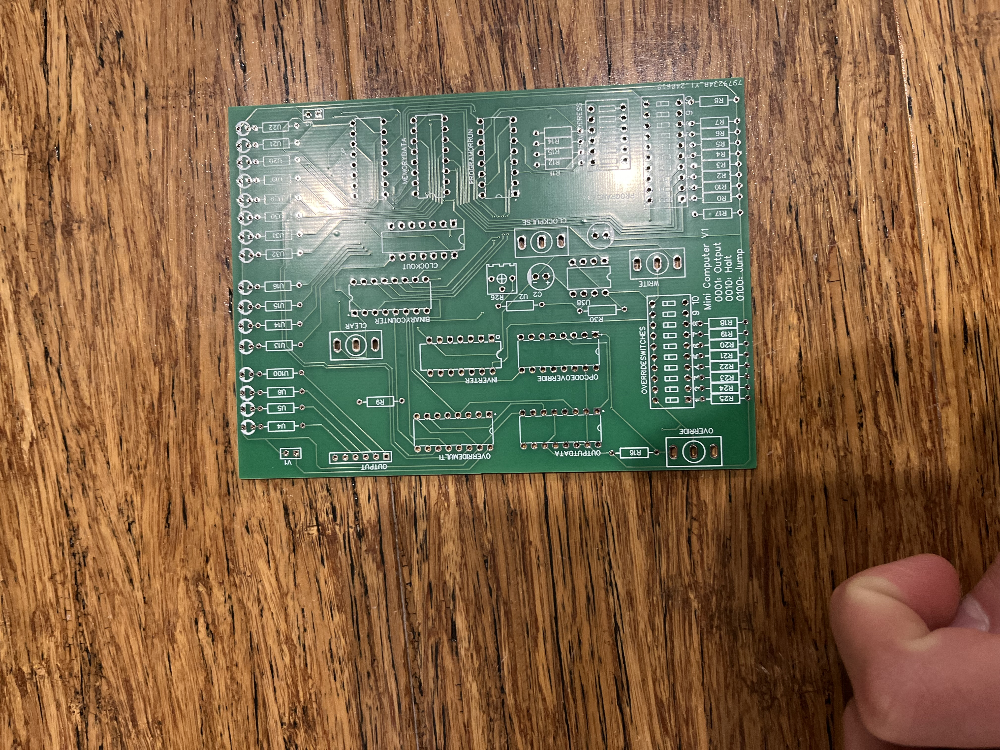
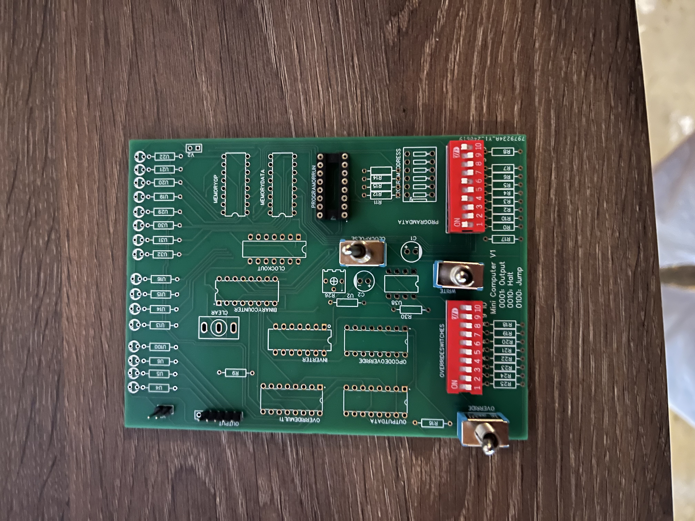

Digital logic
Breadboard computer
A minimal-instruction-set computer designed in CircuitVerse and hand-built from six perfboard cards - CPU, program counter, memory, and a 555 timer clock.

A minimal computer I designed in software, then built from six hand-soldered cards and later put on a custom PCB. No microcontroller. Only logic gates.
My role
- Designed every chip in CircuitVerse.
- Soldered, tested and debugged the hardware.
- Designed the PCB version.
- 6perfboard cards
- 16-bitRAM
- 3instructions
- 555timer clock
Design in software first
I built the whole computer gate by gate before touching hardware. It has four chips: CPU, program counter, memory and a system that joins them.



The instruction set is tiny on purpose: Output, Set Counter (jump), Halt.
Build and test each card


It runs a program
Custom PCB
Same logic, one board. This removes loose wires, the main cause of failures.

